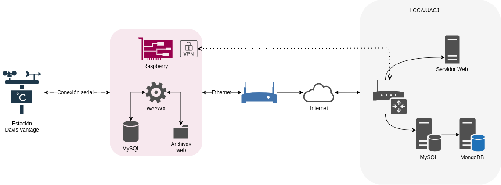
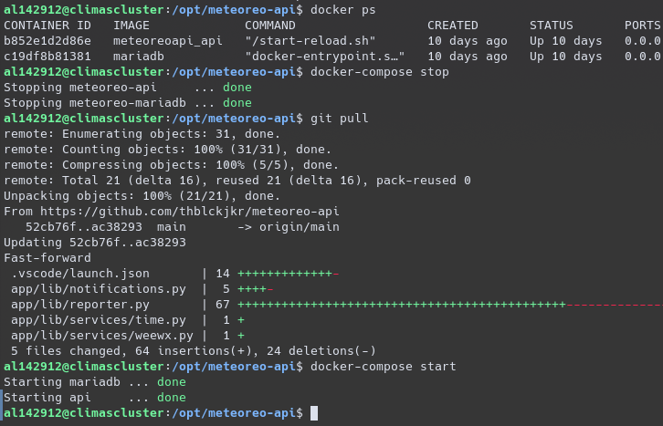
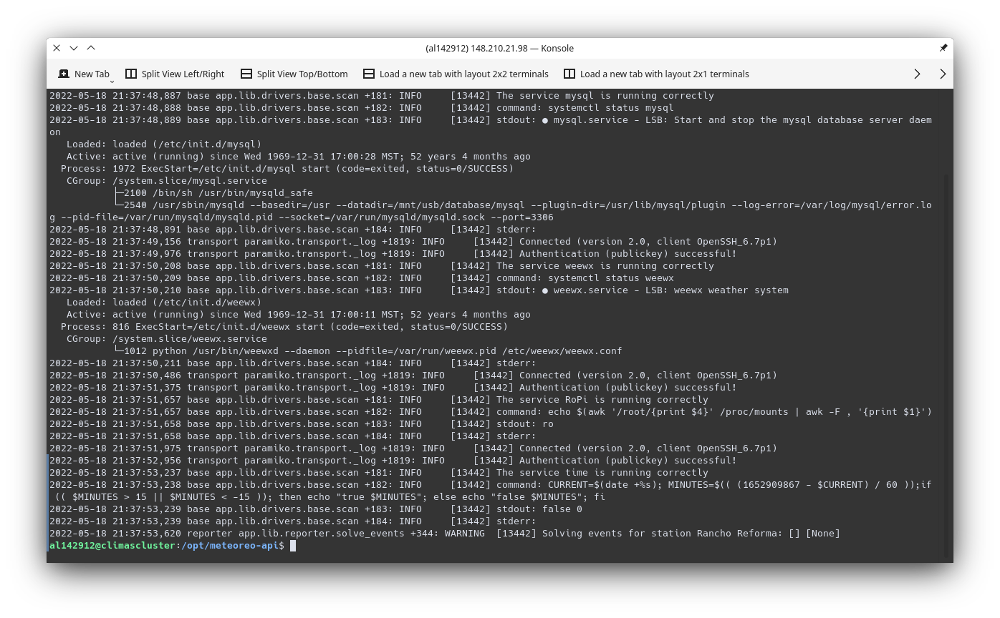

Sistema de monitoreo y control para estaciones meteorológicas
Presente: Teo González Calzada - 142912
Definición del problema
La falta de una plataforma estandarizada para el monitoreo de estaciones meteorológicas, provoca que sea una dificultad creciente el mantener redes densas de monitoreo climatológico.
Objetivo general
Desarrollar un sistema de monitoreo y control de estaciones meteorológicas para personal no especializado, capaz de proveer datos y herramientas que coadyuven en el mantenimiento preventivo y correctivo de las mismas.
Objetivos específicos
Objetivos específicos
Objetivos específicos
Impactos
Integración
Eficiencia
Disponibilidad
Metodología
Análisis
Análisis
Consideraciones de seguridad

Selección de herramientas
Servidor
Selección de herramientas
Cliente
Diseño
De la interfaz
De la base de datos
Desarrollo
Del módulo de monitoreo
Del módulo de monitoreo
Servicios
service = {
"command": "echo $(awk '/root/{print $4}' /proc/mounts | awk -F , '{print $1}')",
"stdout": "ro",
"stderr": None,
"actions": {
"read_write_enabled": {
"description": "La estación está en modo escritura",
"solution": "Reactivar el modo sólo lectura",
"response_stdout": "rw",
"response_stderr": None,
# Solution and the expected solution result
"command": "sudo remountro",
"stdout": None,
"stderr": None,
}
}
}
Del API
from uuid import UUID
from ..models.Station import Station
[...]
@router.get("/{uuid} ")
def get_station(uuid: str):
"""
Get a specific station from it's uuid
"""
result = Station.find(uuid)
result.incidents = result.events.serialize()
return result.serialize()
Del API
De la interfaz gráfica
Notificaciones
[...]
new Vue({
router,
render: h => h(App),
beforeMount() {
this.$OneSignal.init({
appId: process.env.VUE_APP_ONESIGNAL_APP_ID,
allowLocalhostAsSecureOrigin: true,
autoRegister: false,
notifyButton: {
enable: true,
size: 'medium',
theme: 'default',
position: 'bottom-right',
}
});
},
}).$mount('#app')Notificaciones
Pruebas
Despliegue
yarn build && rsync -avz dist/ -e ssh al142912@cecatev.uacj.mx:/var/www/html/meteoreo

Evaluación
Lanzamiento
El sitio fué lanzado con éxito a
https://cecatev.uacj.mx/meteoreo
Resultados
Implementación de un nuevo servicio
service = {
"command": "PERCENT=$(df /mnt/usb --output=pcent | tail -n 1 | tr -d '%'); " + \
"if (( $PERCENT > 80 )); then echo \"true $PERCENT\"; else echo \"false $PERCENT\"; fi",
"stdout": "false",
"stderr": None,
"actions": {
"disk_almost_full": {
"description": "El disco está casi lleno",
"solution": "Elimine algunos archivos de la estación",
"response_stdout": "true",
"response_stderr": None,
}
}
}Implementación de un nuevo servicio
from .base import BaseDriver
from ..services import mysql, ropi, time, weewx
DEFAULT_SERVICES_MAP = {
"mysql": mysql.service,
"weewx": weewx.service,
"RoPi": ropi.service,
}
[...]
class RpiDavisStation(BaseDriver):
def __init__(self, station, services_map=None):
services_map = DEFAULT_SERVICES_MAP
# Refresh time on every instantiation
services_map['time'] = time.service()
return super().__init__(station, services_map)Implementación de un nuevo servicio
from .base import BaseDriver
from ..services import mysql, ropi, time, weewx, disk
DEFAULT_SERVICES_MAP = {
"mysql": mysql.service,
"weewx": weewx.service,
"RoPi": ropi.service,
"disk": disk.service,
}
[...]
class RpiDavisStation(BaseDriver):
def __init__(self, station, services_map=None):
services_map = DEFAULT_SERVICES_MAP
# Refresh time on every instantiation
services_map['time'] = time.service()
return super().__init__(station, services_map)Información recabada
Caso práctico
Conclusiones
Se desarrolló de manera exitosa y funcional el desarrollar una herramienta para un mantenimiento preventivo y correctivo, incluyendo los elementos descritos en los objetivos específicos.
Trabajo futuro
- El sistema requiere intervención para resolver un problema conocido, esto es posible automatizarlo.
- Un sistema de notificaciones inteligente y versátil.
Referencias
Los diagramas presentes en este documento son de autoría propia.
Las fotografías presentes en el documento fueron tomadas
del archivo de estaciones de CECATEV de la UACJ.
Estas diapositivas fueron realizadas con RevealJS, y presentadas (probablemente) con RevealRemote.